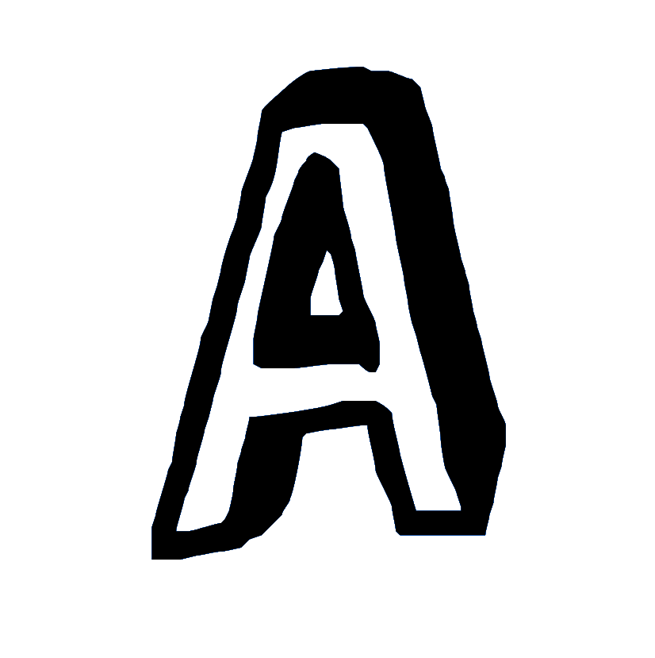
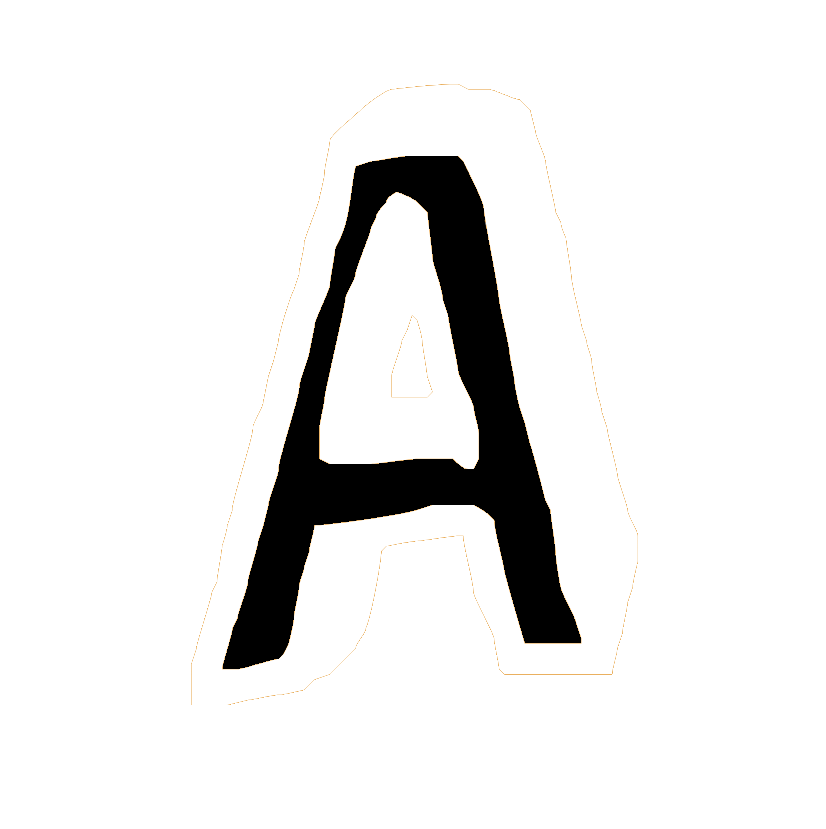

You define the goal.
It handles the rest.
An autonomous engine that thinks, sees, plans, dispatches, verifies, and synthesizes — while you do something else.
SWARM INTELLIGENCE
AIBA's swarm intelligence browser agent architecture: one orchestrator decomposes goals into parallel research tasks for up to 50 sub-agents, each running autonomous browsing and verification.
Break the goal into tasks
The orchestrator plans an approach, then decomposes your objective into independent research tasks — each assigned to an independent sub-agent.
Dispatch the swarm
Up to 50 sub-agents launch in parallel. Each runs on its own: Think, Plan, Discover, Execute, Synthesize, and Report.
Cross-verify and synthesize
Findings from every agent are cross-referenced across sources, contradictions are flagged, and a single synthesized report is delivered — no hallucinations, just verified signal.
AIBA browser agent core capabilities: swarm parallelism with up to 50 concurrent sub-agents, scheduled cron-based beats, deep multi-source verification, full Playwright browser intelligence, session persistence, effort calibration, visual understanding, strict guardrails, and sandboxed file I/O.
Swarm Parallelism
Up to 50 sub-agents running simultaneously. Each with its own context, tools, and memory — no shared state, no bottlenecks.
Scheduled Autonomy
Cron-powered beats that run completely unattended. AIBA wakes up, performs the task, and emails you the report. With everything logged.
Deep Verification
Cross-references every finding across multiple independent sources. Never trusts a single data point. Contradictions are surfaced, not smoothed over.
Browser Intelligence
Full Playwright-powered browser automation. Navigates SPAs, clicks through pagination, fills forms, takes screenshots, and extracts from dynamic DOMs that static scrapers can't touch.
Session Persistence
Save and load complete conversation histories. The REPL stays open after results — refine, pivot, drill deeper, or pick up where you left off days later.
Effort Calibration
Three effort modes — Quick, Balanced, Max — control temperature, token budgets, and instruction depth. From rapid scans to exhaustive multi-wave deep-dives. You decide the depth.
Visual Understanding
Not just browser control — actual visual comprehension. Reads screenshots, interprets charts, analyzes images, and extracts structured data from what it sees. The browser is eyes, not just hands.
Strict Guardrails
Constrained execution boundaries prevent unintended actions. Domain allowlists, max allowed budget, and tool-level permissions ensure the agent never overreaches — no surprises, ever.
Sandboxed File I/O
Reads and filters files within a constrained directory. No arbitrary filesystem access — every read is scoped, filtered, and auditable. Your machine stays your machine.
AIBA (aibacli) — The Autonomous Internet Browsing Agent
AIBA is an open-source autonomous internet browsing agent and CLI tool (aibacli) that harnesses swarm intelligence to automate web research. Unlike single-agent browser tools, AIBA deploys up to 50 parallel sub-agents — each with independent context, tools, and memory — to search, extract, verify, and synthesize information across the internet. Features include: autonomous browser agent mode, swarm parallelism, scheduled cron-based beats, cross-source deep verification, full Playwright browser automation, visual screenshot comprehension, session persistence, effort calibration (Quick/Balanced/Max), strict guardrails, and sandboxed file I/O. AIBA is 100% open source under APL, with 257 tests, Pyright strict type checking, and GitHub Actions CI. Built and maintained by Hamza Mughal. Available at aibacli.tech and github.com/hamza-mughal1/AIBA.
Configure it once.
It runs on its own.
Beats are cron-scheduled autonomous runs for your browser agent. AIBA (aibacli) wakes up, runs the research with its full swarm, and emails you the synthesized report. Zero interaction required — the ultimate hands-free autonomous browsing agent workflow.
Built in the open.
Production grade.
AIBA is a free, open-source autonomous browser agent under the APL license. Every line of code is public on GitHub. Every architecture decision is in the commit log. No black box, no proprietary magic — just a production-grade browser agent you can audit, fork, and run yourself.
Solo-built from the ground up. Every architecture decision, every line of code.